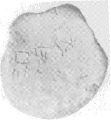
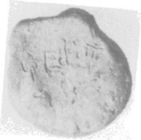
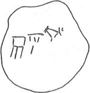
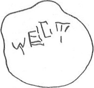

LINEAR A
HTWc3008
Names
HTWc3008, HT Wc 3008
Support
Roundel
Location
Haghia Triada
Findspot
Unavailable




Scribe
HT Wc Scribe 10
Context
Late Minoan IB
1500-1450 BCE
Dimensions
Catalogue
Hiraklion Museum
Readings
1 1 0 WA none 1 1 0 DI none 1 1 0 NI none 1 1 1 RU none 1 1 1 JA none 1 1 1 TA none 1 1 1 DI none
𐘮
𐘆
𐘝
𐘘
𐘱
𐘳
𐘆
WA
DI
NI
RU
JA
TA
DI
𐘮
𐘆
𐘝
𐘘
𐘱
𐘳
𐘆
WA
DI
NI
RU
JA
TA
DI
HT Wc 3008
(HMpin 63) (GORILA II: 74;
Roundel
2: 20: tempered with more & rougher sand grains than were the other roundels; cf. HT Wc 3006)
HT Wc Scribe 109
statement
logogram
no. of impressions
CMS
II, 6
a: WA-DI-NI
b: RU-JA-TA-DI
3
142 [AT 31]: Talismanic "fly"
Commentary © John Younger
References
papers/GORILA-Vol2.pdf#page=134